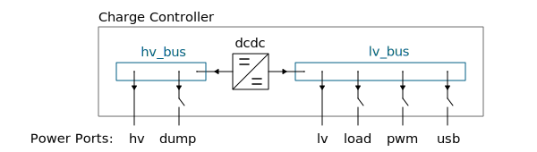

Charger Concepts
Bus and port structure
In order to handle multiple different types of charge controllers, the power flow in the charge controller is abstracted using the two base components DC bus and Power Port:
A DC bus, which is a connection of two or more electrical circuits such that the electric potential at each connection point can be considered equal. This can be achieved either by connecting each participant very close to each other or by using large copper cross-section such that voltage drop introduced by current flow is negligible. The voltage control targets of the bus can only be set by one of the connected ports.
A Power port, which connects a DC bus with an internal or external device or sub-circuit. A port usually contains a current measurement. Its voltage is determined by the DC bus it is connected to. A port can also contain a switching element.
The following image gives an overview of the maximum set of features for a charge controller currently considered in the firmware. It contains two DC buses: High-voltage side (typically solar panel or wind turbine) and low-voltage side (typically determined by battery voltage). Most of the power ports are connected at the low voltage side (12V or 24V).
The image also shows the direction of positive current flow.
Charger state machine
For general information about battery charging, please check out the [battery chapter at learn.libre.solar](https://learn.libre.solar/system/battery.html#charge-methods).
The charger module in the firmware has the following states:
0. Standby
Initial state of the charge controller. If the solar voltage is high enough and the battery is not full, charging in CC mode is started.
1. Bulk stage
This first charging stage adds about 70 percent of the stored energy. The battery is charged with a constant current (CC), typically the maximum current the charger can supply. In case of a solar charge controller, this is where the Maximum Power Point Tracking (MPPT) takes place. As a result, the terminal voltage increases until the peak charge voltage limit is reached and topping phase is entered.
2. Topping stage
During the topping (sometimes also called boost or absorption) the remaining 30 percent of the energy is continued being charged at a constant voltage (CV) while gradually decreasing the charge current until the battery is fully charged.
3. Equalization stage
An additional equalization charging is beneficial for flooded lead-acid batteries only. It can be considered as a periodic controlled overcharge that brings the cells to the same charge level and removes the sulphation by increasing the voltage to a higher value than the peak charge voltage limit. The current during equlization is controlled at a very low value.
4. Float stage
The float or trickle charging stage is the final phase upon the completion of the absorption or equalization phase which maintains the battery at full charge. During this stage, the charge voltage is reduced and held constant. The current reduces to a very low value.